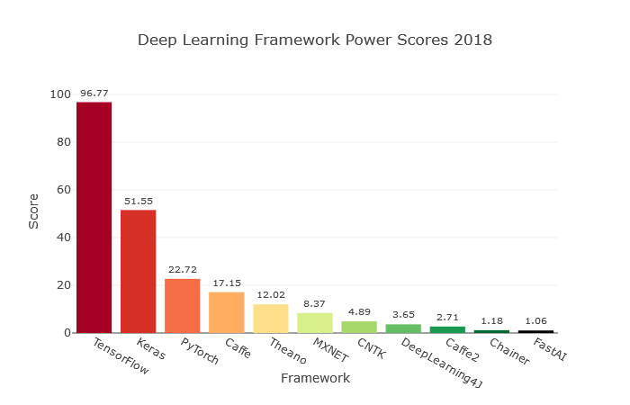

Description
Bibliotèques contenant plusieurs “outils” scientifiques notamment des tableaux multi-dimensionnels (numpy.array) et des fonctions d’affichages graphiques (images, graphique…)
Description
LA “sous-couche” des autres bibliotèques d’apprentissages de réseaux de neurones. Comme tous les autres utilise des Numpy.arrays
Description
Bibliothèque très complète. Elle est complexe mais permet une grande flexibilité et une personnalisation approfondie une fois les compétences acquises. Elle a été développé par Facebook, elle est assez plébiscitée par les chercheurs du fait de son efficacité et de sa rapidité pour mettre en place des modèles d’apprentissages. Elle a pour avantage d’avoir des pièces modulaires prêtes à l’emplois, un processus de modélisation simple et son mode de définition se rapproche beaucoup de la programmation standard. Mais par contre il n’y a pas d’interface permettant de visualiser le processus ce qui peut compliquer la tâche des programmeurs.
Description
Sûrement la bibliotèque python la plus aimé car elle est simple d’utilisation sans pour autant brider les possibilités de programmation. Seul point faible, la personnalisation est difficile à mettre en place. Elle se programme sous forme de blocs, ce qui fait sa simplicité et réduit la longueur du code. Les personnes utilisants Keras commencent à migrer vers TensorFlow qui est justement basé sur keras mais ajoute de nouvelles possibilitées.
Description
TensorFlow est une bibliotèque open source développée par une équipe de Google (Google Brain Team). Elle n’est pas seulement utilisée par Google mais par beaucoup d’autres grandes entreprises (Twitter, Coca-Cola, Airbus…). Cette bibliotèque peut être utilisée pour plusieurs plateformes (ordinateurs, telephones, internet et cloud). Elle est principalement utilisé dans la reconnaissance vocale ou d’image et dans les applications textuelles, comme Google Translate par exemple. Elle a pour avantage d’être très utilisée ce qui fait qu’il y a beaucoup de documentation avec une grosse communauté de développeur. Point faible, elle est lente car il y a beaucoup de fonctionnalitées implémentées qui ne seront pas utilisé par tout le monde mais forcément importés.
Sur le site towardsdatascience une comparaison entre plusieurs bibliotèques python a été faite. Le score de chaque bibliotèque a été calculé en fonction de critères tels que la fréquence de recherche google, l’activité GitHub ou bien le nombre d’articles qui en parle.
